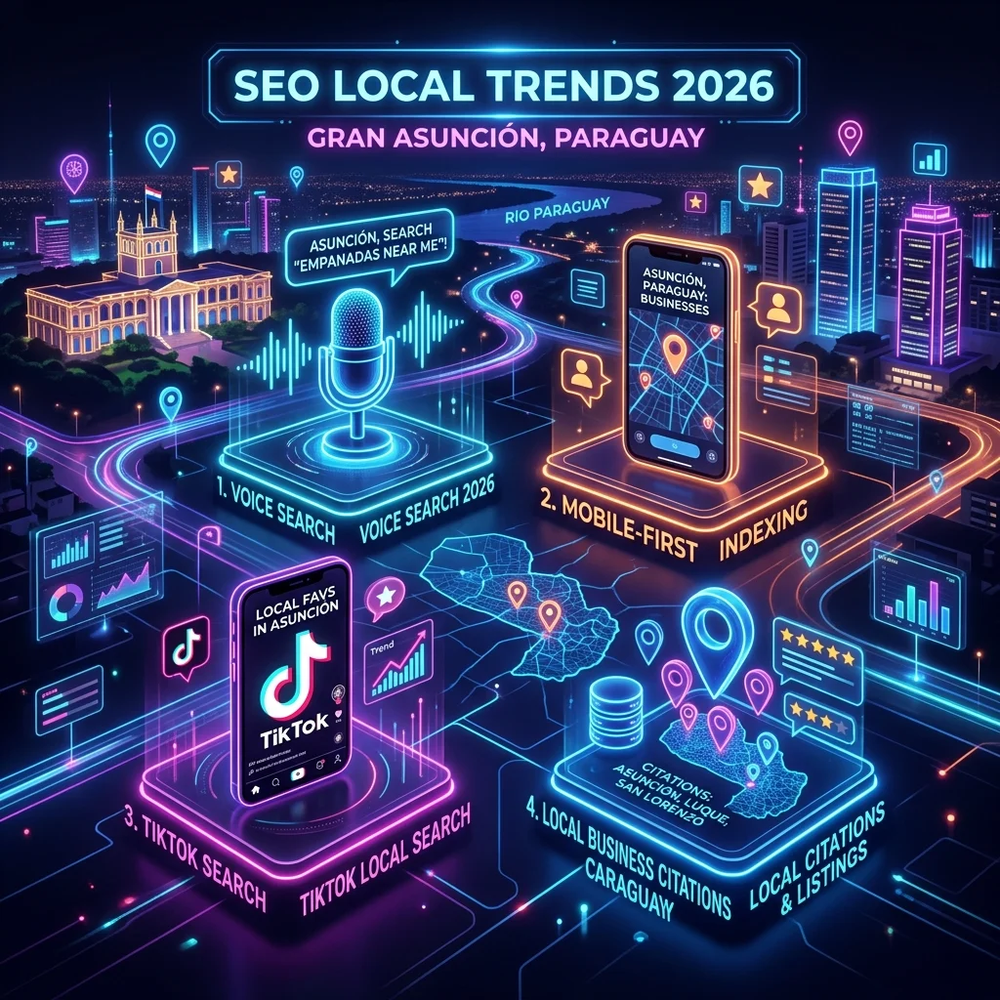

El posicionamiento local no es estático. Para este año 2026, el crecimiento de la búsqueda semántica, la masificación de los asistentes de voz móviles y la integración de inteligencia artificial en las búsquedas cotidianas del mercado paraguayo obligan a repensar las estrategias de visibilidad digital.
Si quieres que tu local físico en Asunción, Luque o San Lorenzo sea la primera opción de tus clientes ideales, debes conocer y adoptar las tendencias que están redefiniendo el SEO Local en Paraguay.
Las 7 Tendencias Indispensables para 2026
1. Impacto de IA Generativa en Google Maps
Google implementa resúmenes analíticos instantáneos dentro de Maps. El buscador agrupa opiniones, fotos y publicaciones para responder directamente al usuario si un local es recomendable para lo que busca.
2. Búsquedas por Voz Conversacionales
Los paraguayos consultan cada vez más a través de comandos de voz en su smartphone. Búsquedas directas como "¿dónde hay un taller mecánico abierto cerca de mí?" obligan a redactar textos web en formato conversacional y natural.
3. SEO Multiplataforma (TikTok y Google)
Las generaciones jóvenes en Paraguay usan TikTok e Instagram como motores de búsqueda local alternativos. El SEO ahora implica optimizar descripciones y hashtags de videos para palabras clave geolocalizadas.
4. E-E-A-T 2.0 (Confianza y Autoridad Real)
Google prioriza el contenido creado con **Experiencia, Expertise, Autoridad y Confianza**. Frente a la saturación de textos generados por IA sin alma, los casos de éxito documentados y autorías reales ganan el ranking.
5. Mobile-First como Estándar Absoluto
Más del 85% de las búsquedas locales en la Gran Asunción se inician desde un smartphone. Tu sitio web debe cargar en menos de un segundo y tener botones call-to-action visibles en primer plano.
6. Contenido Hiperlocalizado
No digas solo que estás en Paraguay. Menciona tu barrio (Barrio San Luis, Av. España, etc.), hitos geográficos cercanos y eventos de tu comunidad para dar señales geográficas fuertes al buscador.
7. Citaciones y Backlinks Locales
Conseguir enlaces de periódicos de Paraguay, blogs locales, gremios o cámaras de comercio de Asunción le indica a Google que tu empresa tiene relevancia física real en el país.
¿Quieres adaptar tu negocio paraguayo a las tendencias de 2026?
En PureteGO diseñamos estrategias personalizadas de posicionamiento web local y GeoMarketing para empresas exigentes. ¡Contáctanos y lidera tu sector!
AGENDAR CONSULTORÍA GRATIS